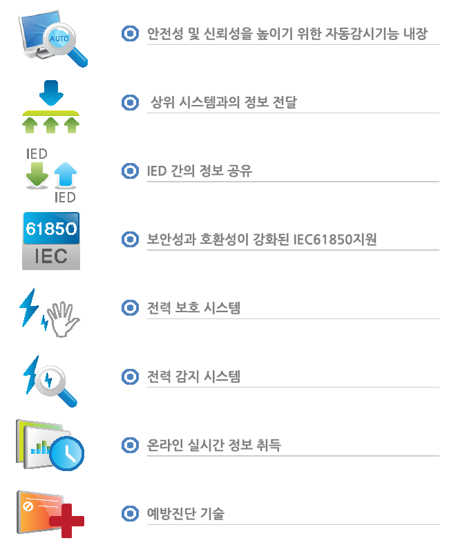
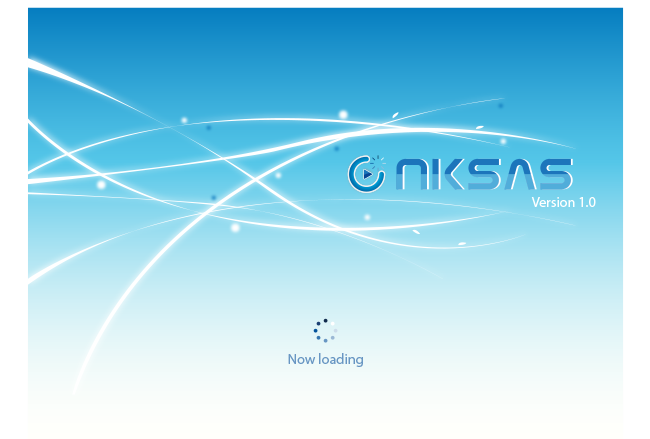
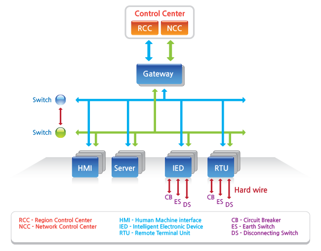
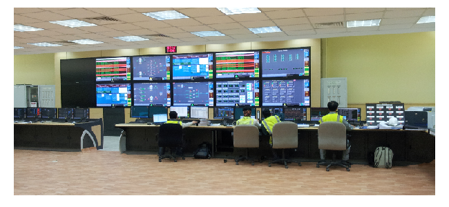

지능형 전자 장치는 전력 계통 내부에 설치되는 각종 아날로그 또는 디지털 계측 및 정보 수집용 디바이스를 전자화 및 지능화한 장비이다.
IED의 일반적인 유형은 보호 릴레이 장치, 탭 체인저로드 컨트롤러, 회로 차단기 컨트롤러, 커패시터 뱅크 스위치, Recloser 컨트롤러, 전압 레귤레이터 등이 있다.
IED는 상호 운용성 및 고급 커뮤니케이션 기능을 제공하여 변전소 자동화를 위한 IEC61850 표준을 지원하도록 설계되었다.

시각이나 청각과 관련 지어진 인간의 아날로그적인 인지의 세계와 컴퓨터나 통신의 디지털을 처리하는 기계의 세계를 연결하는 인터페이스 장비.
각종 전력 장비들의 상태를 사용자가 이해할 수 있게 보여주며 명령을 전달하는 기능을 한다.
Gateway로 부터 오는 데이터를 HMI에 실시간 반영, 갱신, 업데이트한다.
Gateway에서 넘어온 정보를 출력해주는 프로그램.
NemKorView 프로그램에 들어갈 이미지 및 이벤트를 편집하는 프로그램.
각각의 객체들에게 이벤트 부여가 가능하며 언제든 쉽고 편하게 편집이 가능하다.
변전소 자동화 시스템. 변전소 전력설비의 상태 감시, 각종 측정값 수집, 설비제어 기능을 제공한다.
변전소의 각종 설비를 총괄하여 운영하는 중추 신경계통으로 변전소에 산재되어 있는 설비를 한 곳에 집중하여 감시, 측정, 제어하는 역할을 수행한다.

집중 원격감시 제어시스템. 전력설비를 원격에서 감시 및 제어하며 분석을 위한 다양한 기능을 제공한다.
중앙 제어 시스템이 원격 장치를 감시, 제어하는 시스템을 말하며 원격지 시설 장치를 중앙 집중식으로 감시 제어하는 시스템이다.

